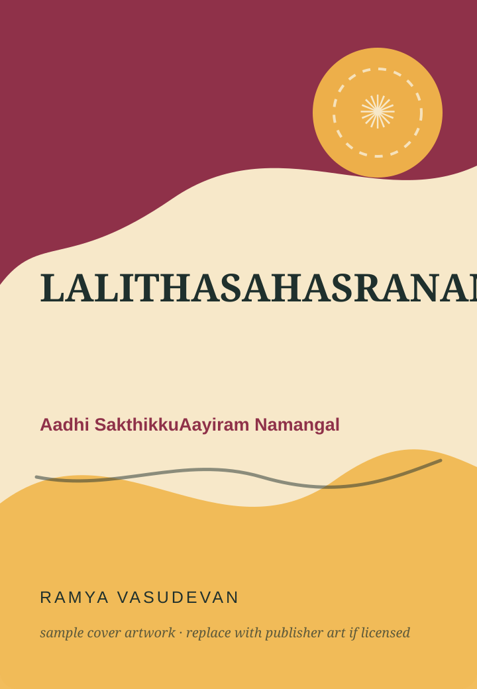
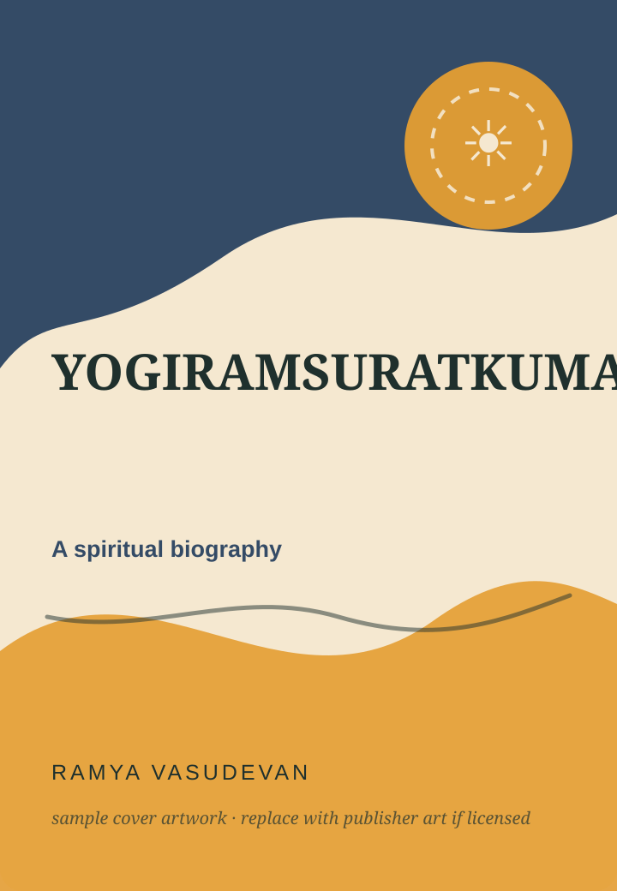
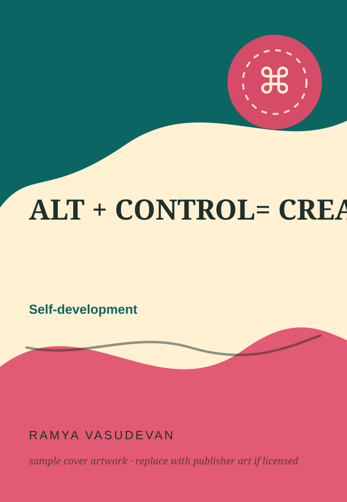

Lalitha Sahasranamam Vilakka Urai
லலிதா சஹஸ்ரநாமம் விளக்க உரை
Suriyan Pathippagam. The dossier documents Parts 1 & 2; current bookseller listings also show a Part 3.
Books · columns · authored work
The books page distinguishes authored titles from narrated works by other writers — an important editorial choice for a storyteller whose audio archive is much larger than her bibliography.
Illustrated title cards are used as visual identifiers; publisher editions may use different cover artwork.

Bibliography
Filter by domain. Where an official or retailer page was verified, a source link is provided.

Suriyan Pathippagam. The dossier documents Parts 1 & 2; current bookseller listings also show a Part 3.

Documented in research profiles and Dinamalar; the work is accompanied by public lecture / satsang activity.

A self-development work using computing-key metaphors for mindset, self-mastery and emotional regulation.

A book rooted in Srirangam, temple memory and lived devotion; Zero Degree Publishing lists Ramya Vasudevan as author under the Ezhuthu Pirasuram imprint.

Yaavarum lists the work as a two-part bundle; a February 2026 Shruti TV Literature event covers its launch.

Zero Degree Publishing lists the 2026 children’s book under the Kamarkat imprint; the dossier records 108 pages and ISBN 9789395731089.
Serialized writing
The research dossier recommends treating this as an ongoing article / column series rather than assuming it is a standalone book.
It began publicly in August 2025 and continued into 2026 with pieces on focus, happiness, anger, fear, responsibility and learning. The site therefore gives it its own “writing in progress” area instead of squeezing it into the bookshelf.
“When I read a book, I want to share it with someone.”